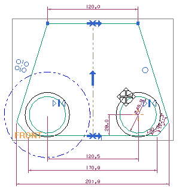
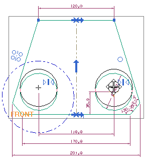
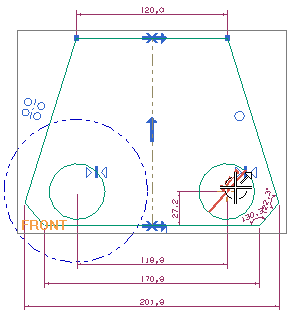
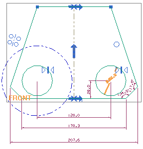

测试结果
-
将草图尺寸拖动到图纸页上更容易看清的位置。

-
将光标放在其中一个圆弧的边上，然后拖动更改它的直径。

注意到对称约束将使另一个圆也增大直径，自动标注的尺寸也同时更新，您还可以拖动圆的圆心来移动它们的位置。

-
双击圆上的直径尺寸。

-
在圆的屏显输入框中，将当前尺寸值替换为50，然后回车。
两个圆的直径都将更改。

-
单击鼠标中键以关闭编辑尺寸对话框条。
您刚才编辑的尺寸的颜色变为蓝色，表示它现在是一个驱动尺寸。

拖动圆时，您将无法再编辑圆的直径。